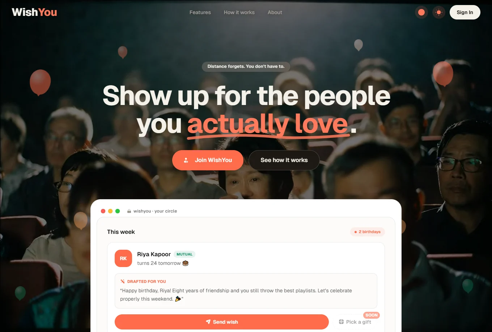

01 / WISHYOU
Live personal project

RELATIONSHIPS, REMEMBERED
Small wishes.
Small wishes.
Meaningful connections.
A little help showing up for the people who matter. Relationship graphs and AI make every birthday wish feel personal.